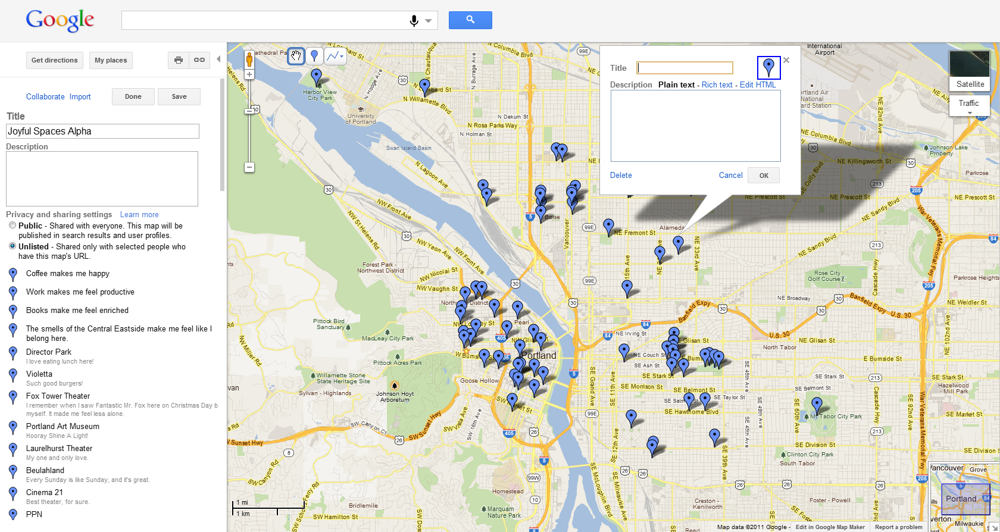

Joyography
Joyography was the first project in which I collaborated with Lisa Ciccarello for Open Engagement. Fueled by Lisa's lack of understanding about what I did for a living, we collaborated on a web-based mapping application that accepted information about the places in Portland that brought conference-goers joy.
Though the map application was rather simple in nature, the map was well received during the conference.
We decommissioned the URL and the application, but have built a map that displays all of the data. You can look at that here.
You can download the data that was produced throughout the course of the conference in Comma Separated Value (.csv) format here.
Return to steveleathers.com or read about related projects Affirmation Hotline and Are You Your Work?